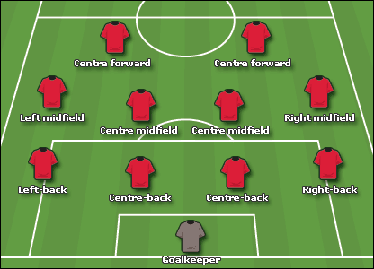
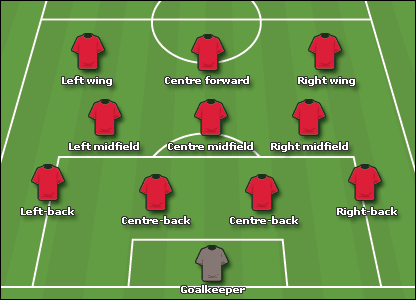

HNDDS Capstone Project | COHNDDS(F/T)201F-008
Introduction
A breif overview of the background of the research project.
Introduction to the award
The Professional Footballers' Association Team of the Year (or PFA TOTY, in short) is an annual award given to a set of 55 footballers across the top four tiers of men's English football (namely, the Premier League, the Championship, League One and League Two) and the FA Women's Super League, who are seen to be deserving of being named in a "Team of the Year" (i.e. chosen for exceptional performances in a League season). A major distinction of this award from other awards is the fact that the winners are voted for by other players in their respective divisions, a reason due to which many players consider it as the highest accolade available to them.
Note that, even though the award is given to players from five different tiers of English football, in this research project, only players playing for the top tier of men's English football (i.e. the Premier League, since its inception) would be discussed. Accordingly, the eleven awards given to chosen Premier League players annually from the 1992/93 League season was the main subject of this research.
History and format of the award
The PFA TOTY has been presented to players since the 1973/74 League season. The shortlist is compiled by the members of the players' trade union, (i.e. the Professional Footballers' Association), every year, with the winners then being voted for by the other players in their respective divisions, as mentioned earlier. However, as the inaugural season of the Premier League was the 1992/93 season, this research project would be limited from said season to the latest one (the 2020/21 season).
The award has been usually presented in the 4-4-2 football formation (with the exceptions of seasons 1993/94, 1994/95, 2017/18, 2018/19, 2019/20 and 2020/21), which means out of the 11 players chosen, there would be 1 goalkeeper, 4 defenders, 4 midfielders and 2 forwards. Said formation was used frequently since it was the traditional football formation. In the seasons 1993/94, 1994/95, 2017/18, 2018/19, 2019/20 and 2020/21, the 4-3-3 formation was chosen instead, which means, in those seasons, 1 goalkeeper, 4 defenders, 3 midfielders and 3 forwards were included in the PFA Team of the Year.
Past Winners
The award can be won multiple times by the same player (i.e. in different seasons). Accordingly, Liverpool Football Club's legendary midfielder and 2021 Premier League Hall of Fame inductee Steven Gerrard holds the most appearances in the PFA Team of the Year in the Premier League era with eight appearances (which is at least two more than any other player has managed). A total of six different players were observed to have won the award a total of six times.

Several players from the same club can also be included in any given season's PFA TOTY. Manchester United Football Club holds the record for being the club with the most players included in the PFA TOTY, with 81 different inclusions from 1992/93 to 2020/21. A very notable fact is that the 6 teams with the most inclusions are what is traditionally known as the ‘Big Six’ in English football; in other words, the 6 most consistently successful teams in the Premier League. These 6 clubs in total were seen to have represented 69.91% of all inclusions. On the other side of the spectrum, a total of 8 different clubs were observed to have had one representative each.

Brief Overview of the Objective of the Research Project
The PFA TOTY being voted for by fellow players themselves means that it is considered one of the most prestigious awards a player can win. However, this human nature of the award has resulted in several controversies;
several seasons have been observed where football pundits and fans alike have found inclusions in the PFA TOTY undeserved, with other players seemingly having been a more objective fit. Reputational bias has been claimed to be the major
culprit in such scenarios.
The ultimate goal of this project was the creation of models that would be able to choose players worthy of being included in a given season’s PFA TOTY more objectively.
Objective of creating this website
The aim of building this complementary website to the project was to communicate results obtained as part of the research in a more interactive manner. As such, multiple insights and results that were obtained throughout the research process could be accessed through navigation across this website.